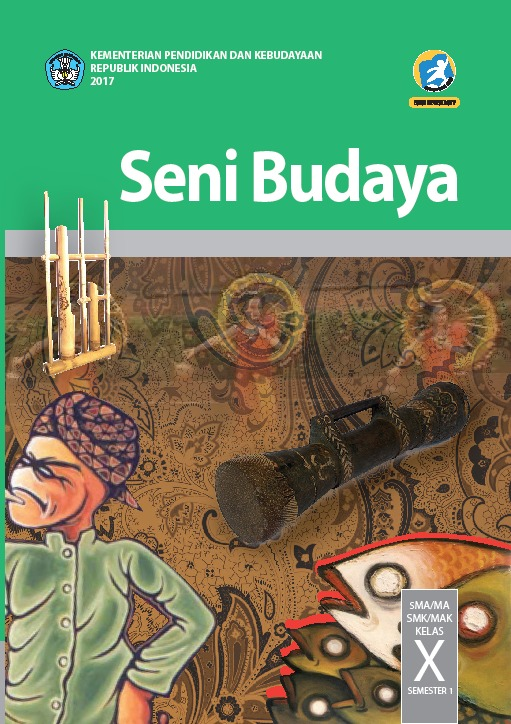

Seni Budaya Kelas X
Menjelajahi Karya Indah, Meresapi Makna, Bersama Seni Budaya Kelas X

Materi
Musik Tradisional
Pengertian Musik
Musik adalah seni yang berfokus pada organisasi dan ekspresi suara. Suara-suara ini, yang dapat berasal dari suara manusia atau alat musik, disusun secara kreatif ...
Baca SelengkapnyaMusik Tradisional
Simbol Musik dan Nilai Estetis
Simbol musik adalah elemen penting dalam notasi musik yang membantu dalam membaca dan memahami musik. Beberapa jenis ...
Baca SelengkapnyaMusik Tradisional
Jenis Musik Tradisional
Beberapa jenis musik tradisional Nusantara yang dapat ditemui di Indonesia antara lain:...
Baca SelengkapnyaMusik Tradisional
Alat Musik dan Fungsi Musik Tradisional
Alat-alat musik tradisional merupakan bagian penting dari warisan budaya Indonesia yang kaya dan beragam. Mereka tidak hanya memainkan peran dalam kehidupan...
Baca Selengkapnya